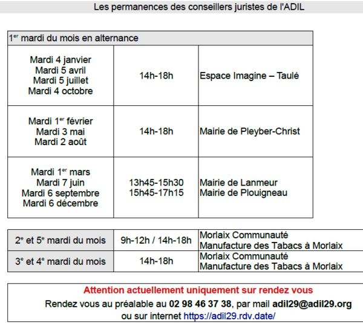

Habiter, trouver un logement, entreprendre des travaux, rénover ?
Trouvez des réponses à vos questions et faites le tour de la question avant de démarrer vos travaux. Des solutions et des interlocuteurs peuvent vous accompagner.
Un projet habitat ? Faites-vous coacher gratuitement !
Salon de l'habitat - 29, 30, 31 oct. et 1er nov. 2022 Bénéficiez d’une séance de coaching d’1h avec un professionnel de l’architecture et de l’urbanisme, pour étudier votre projet d’habitat ! Lire la suite...
Crise sanitaire : dispositif d'aide au paiement des loyers
Une plateforme d'aide pour les locataires en difficulté. Cliquez ici pour en savoir plus !
Instruction des autorisations d'urbanisme
La loi pour l'accès au logement et un urbanisme rénovés du 24 mars 2014 (dite « ALUR ») a décidé la fin de la mise à disposition gratuite des services de l'Etat pour l'instruction des demandes d'urbanisme déposées dans les mairies, à compter du 1er juillet 2015.
Cela concerne toutes les communes regroupées dans une communauté de plus de 10 000 habitants et qui ont la compétence « urbanisme », donc au minimum toutes les communes qui ont un Plan Local d'Urbanisme. Lire la suite...
Permanence de l'ADIL
L'Agence Départementale d'Informations sur le Logement (ADIL) est un organisme de juristes qui ont
pour mission,
d'après l'article L.336-1 du code de la construction et de l'habitation,
d'informer gratuitement les usagers sur leurs droits et obligations, sur les solutions de logement
qui leur sont adaptées,
notamment sur les conditions d'accès au parc locatif et sur les aspects juridiques et financiers de
leur projet d'accession
à la propriété, ceci à l'exclusion de tout acte administratif, contentieux ou commercial.

Nos réseaux sociaux :
Suivez l'actualité en temps réel...
sur Twitter

sur Facebook

Ou vivez la région à travers notre chaine Youtube